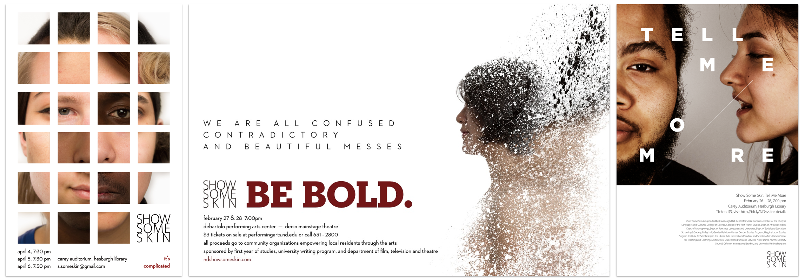
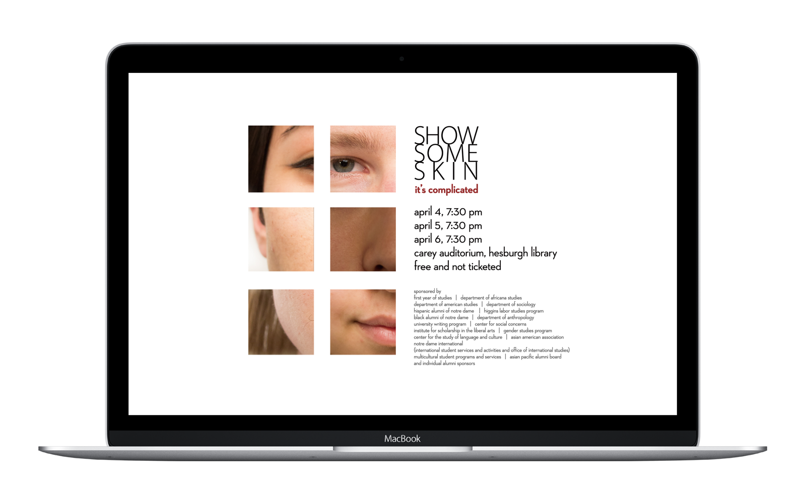

Show Some Skin is an annual theatrical production at the University of Notre Dame. We collect anonymous monologues from students and perform them on-stage to shed light on the hidden diversity at Notre Dame. For 2013 – 2015, I am in charge of its concept and print design.
 Posters for Show Some Skin, 2013 – 2015Over three years, I experimented with different ways of working with photos, type, and whitespace. With extensive whitespace, these posters are dramatic, different, and attention grabbing, while directing viewers’ attention to the text and visual at the same time. These concepts are different yet similar, providing a sense of familiarity despite the very different themes each year.
A longer explanation of my ideas for the 2014 campaign, Be Bold, can be found on Behance.
 Supplementary computer wallpaper campaign in 2013